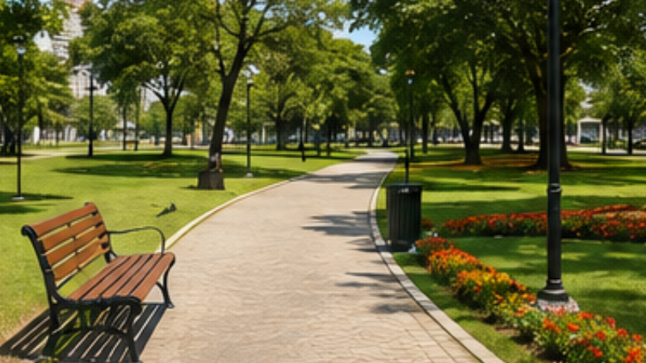
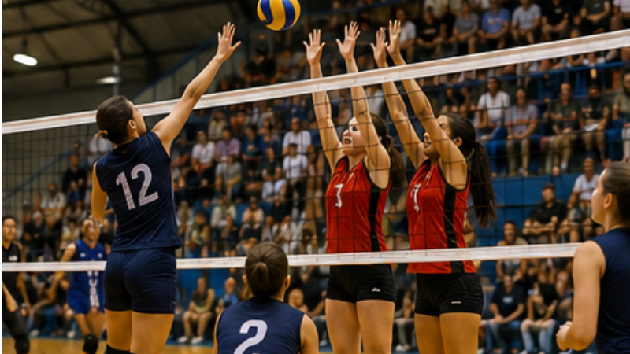
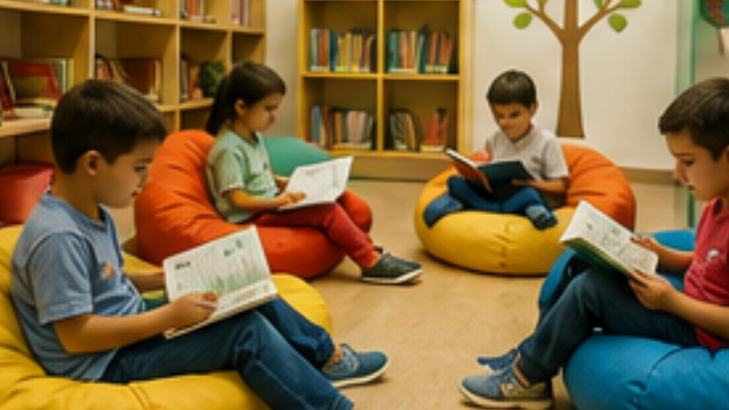
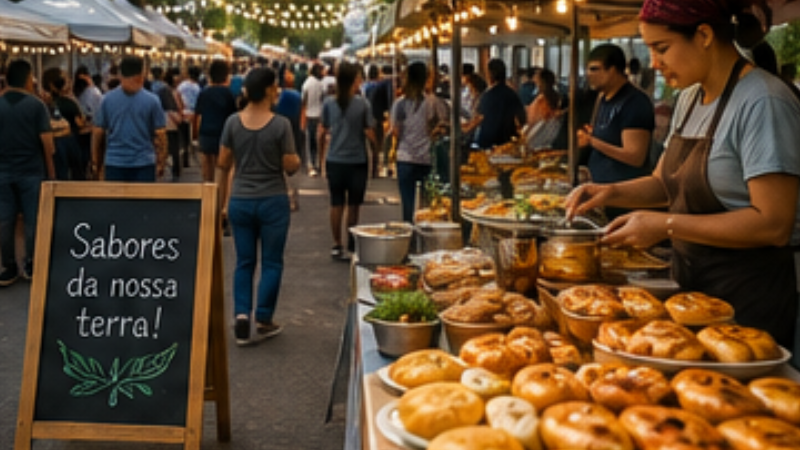
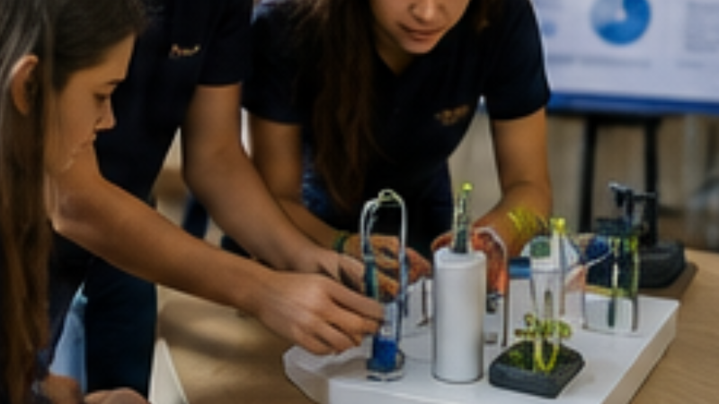

Tecnologia local impulsiona pequenos negócios
Publicado em 2 de agosto de 2026
Cada vez mais pequenos empreendedores têm utilizado ferramentas digitais para ampliar a presença de suas empresas na internet. O uso de redes sociais, sites institucionais e aplicativos de mensagens tornou-se uma estratégia importante para conquistar novos clientes e fortalecer a relação com o público.
Além de facilitar a divulgação de produtos e serviços, essas ferramentas permitem uma comunicação mais rápida e personalizada com os consumidores. Muitos comerciantes relatam aumento nas vendas após investir em marketing digital e atendimento online.
Especialistas afirmam que investir em uma identidade visual consistente, produzir conteúdo de qualidade e manter um bom relacionamento com os clientes pode fazer grande diferença, mesmo para empresas de pequeno porte.
Parque municipal recebe revitalização completa

A prefeitura concluiu nesta semana a revitalização do principal parque da cidade, um dos espaços públicos mais frequentados pelos moradores. As obras incluíram a instalação de novos bancos, iluminação em LED, recuperação das pistas de caminhada e modernização das áreas de convivência.
Também foram plantadas novas árvores e flores, tornando o ambiente mais agradável para famílias, esportistas e visitantes. O parque contará ainda com uma programação cultural aos finais de semana, incluindo apresentações musicais, feiras de artesanato e atividades para crianças.
Segundo a administração municipal, a expectativa é incentivar o lazer ao ar livre e promover uma maior integração entre a comunidade.
Campeonato estudantil reúne mais de 500 atletas

O campeonato estudantil da região reuniu mais de 500 atletas de diferentes escolas em uma competição marcada pelo espírito esportivo e pela integração entre os participantes.
Durante cinco dias de evento, foram disputadas modalidades como futebol, futsal, vôlei, basquete e atletismo. Além das competições, os estudantes participaram de palestras sobre alimentação saudável, disciplina e trabalho em equipe.
A organização destacou o alto nível técnico das equipes e informou que pretende ampliar o número de modalidades na próxima edição do campeonato.
Biblioteca inaugura espaço dedicado à leitura infantil

A biblioteca municipal inaugurou um novo ambiente voltado para crianças de até 12 anos, oferecendo um espaço confortável e acolhedor para incentivar o hábito da leitura desde cedo.
O local conta com estantes coloridas, almofadas, mesas para atividades educativas e uma ampla coleção de livros infantis. Também serão realizadas oficinas de desenho, contação de histórias e encontros com escritores ao longo do ano.
Pais e educadores elogiaram a iniciativa, destacando a importância de aproximar as crianças do universo da leitura de forma divertida e acessível.
Feira gastronômica movimenta economia local

A feira gastronômica realizada no centro da cidade reuniu dezenas de restaurantes, pequenos produtores e empreendedores do setor alimentício durante todo o fim de semana.
Os visitantes puderam experimentar pratos típicos da região, doces artesanais, cafés especiais e diversas opções da culinária nacional. Além da gastronomia, o evento contou com apresentações musicais, espaço para crianças e exposição de produtos artesanais.
Segundo os organizadores, a feira superou as expectativas de público e contribuiu para fortalecer o comércio local, atraindo moradores e turistas de cidades vizinhas.
EsportesEquipe da cidade conquista título regional
Após uma campanha consistente ao longo da competição, a equipe da cidade conquistou o título regional ao vencer a grande final por 2 a 0 diante de um estádio lotado.
Os gols da partida foram marcados ainda no primeiro tempo, garantindo tranquilidade para administrar o resultado até o apito final. A torcida fez uma grande festa nas arquibancadas e comemorou a conquista com os jogadores após o encerramento da partida.
A diretoria afirmou que o próximo objetivo será preparar a equipe para disputar competições estaduais na próxima temporada.
EconomiaComércio registra crescimento nas vendas do semestre
Levantamento divulgado pela associação comercial aponta crescimento nas vendas do primeiro semestre em comparação com o mesmo período do ano anterior.
Os setores de vestuário, alimentação e eletrônicos apresentaram os melhores resultados, impulsionados por campanhas promocionais e pelo aumento do consumo das famílias.
Empresários demonstraram otimismo para os próximos meses e acreditam que novas ações de incentivo ao comércio poderão manter o ritmo de crescimento observado neste ano.

CiênciaEstudantes desenvolvem sistema para economizar água
Um grupo de estudantes apresentou um projeto inovador durante uma feira de tecnologia: um sistema capaz de monitorar o consumo de água em residências e identificar possíveis desperdícios em tempo real.
O protótipo utiliza sensores para registrar o fluxo de água e enviar informações para um aplicativo, permitindo que os moradores acompanhem o consumo diariamente.
A iniciativa chamou a atenção dos visitantes e recebeu elogios dos avaliadores, que destacaram o potencial da solução para promover o uso consciente dos recursos naturais e reduzir os gastos das famílias.